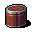
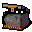
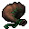
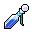

発動アイテム Evocable items
英語版 CrawlWiki の記事「Evocable items」(0.33 向け、2025-11-20 版)の翻訳です。原文の著者は編集履歴をご覧ください。
この記事は 0.33 の時点の内容で、最新の 0.34 とは違うところがあるかもしれません。
発動アイテムは、V キーで発動させて力を引き出す魔法のアイテムだ。効果の強さはたいてい発動スキルで決まる。
発動アイテムの多くは呪文に似た働きをし、呪文とほぼ同じ効果を持つものもある。呪文と違って失敗率がなく(ただし効果が出るかどうか意志力で判定するものはある)、静寂の中でも使え、たいてい MP もかからず、トログにも禁じられていない。その反面、ほとんどの発動アイテムは使える回数に限りがある。使い切ったあとにもう一度使うには、経験値を稼ぐか、床に落ちている追加の充填を拾わなければならない。そのため発動は主な攻撃手段にはせず、とくに役立つ場面に取っておく「奥の手」として控えめに使われることが多い。
目次
杖
魔法の杖は近接攻撃に属性の追加ダメージを乗せる。このダメージは、杖ごとの呪文の系統のスキルと発動スキルの両方で伸びる。杖は本来の意味での発動アイテムではないので、いくつかの決まりにあてはまらない。杖は魔法の品なのでトログに禁じられているし、充填もない。アーティファクトの杖には直接発動できる能力を持つものもあるが、手に持っていなければならず、使うには MP などの代償がかかる。
アーティファクト
2つの固定アーティファクトは、能力メニューから使える能力を持っている。その強さは発動スキルで伸びる。
 オルグレブの杖: オルグレブの毒気の光輪を唱えられる。錬金術の杖をいくらか強くしたものとしても働く。
オルグレブの杖: オルグレブの毒気の光輪を唱えられる。錬金術の杖をいくらか強くしたものとしても働く。 ディスペータのオーブ: 地獄の鉄槌を放つが、HP の 10% を失う。
ディスペータのオーブ: 地獄の鉄槌を放つが、HP の 10% を失う。
ワンド
ワンドは、決まった呪文が何回分か込められた魔法の道具だ。使うのに手に持つ必要はない。
その他の発動アイテム
これらのアイテムは発動させて効果を起こす。使い手の発動スキルが高いほど効果も強くなる。
充填の数は決まっていて、経験値を稼ぐと回復する。同じ発動アイテムを複数手に入れるとひとつにまとまり、強化値が上がる(最大 +5)。強化値が上がると、充填の回復に必要な経験値が減る。充填の回復に必要な経験値は、発動スキルと発明家の手袋によっても減る。
いつでも出るもの
 稲妻のロッド: 電撃の光線を放つ。続けて何ターンも発動すると光線が強くなり、あたりをなぎ払える。
稲妻のロッド: 電撃の光線を放つ。続けて何ターンも発動すると光線が強くなり、あたりをなぎ払える。 幻影の鏡: モンスター1体の写し身を短いあいだだけ作り出す。
幻影の鏡: モンスター1体の写し身を短いあいだだけ作り出す。 ゲリュオンの角笛: 罪の獣を何体か呼び出すが、敵対するものが混じることもある。ゲリュオンが必ず落とす。
ゲリュオンの角笛: 罪の獣を何体か呼び出すが、敵対するものが混じることもある。ゲリュオンが必ず落とす。
どちらか一方しか出ない組
各アイテムセットからは、1回のゲームで1つしか出ない。
元素・範囲攻撃のセット

震動石の缶: プレイヤーの近くで破片の爆発を何度も起こす。自分も巻き込まれるおそれが常にあるが、ダメージは防具で大きく減らせる。 凝結の風見: 見えている敵すべてのまわりに有害な雲を作る。
凝結の風見: 見えている敵すべてのまわりに有害な雲を作る。

召喚のセット

獣の匣: ランダムに作られた異形の怪物を呼び出す。
蜘蛛の袋: 蜘蛛を何匹も呼び出し、近くのモンスターを蜘蛛の巣で絡めとることもある。


制御のセット

大水の小瓶: ダメージを与える水の波を放ち、浅い水たまりを作る。波に呑まれた相手は水浸しになる。 ゲルの重力タンバリン: 選んだ範囲にモンスターを引き寄せてその場に留め、衝突のダメージを与える。
ゲルの重力タンバリン: 選んだ範囲にモンスターを引き寄せてその場に留め、衝突のダメージを与える。

その他のアイテム
変更履歴
- 0.33 より前は、その他の発動アイテムは1回のゲームで各1つずつしか出ず、ジーヴァのスライムにも食べられず、強化値の仕組みもなかった。経験値による充填の回復の式も違っていて、発動スキルの影響がもっと大きかった。
- 0.30 より前は、その他の発動アイテムは1点ものではなく、1回のゲームで同じものがいくつも見つかることがあり、ジーヴァのスライムに食べられることもあった。また凝結の風見と震動石の缶は、どちらか一方しか出ない組ではなかった。
追加された発動アイテム
- 0.32 - ゲルの重力タンバリン
- 0.31 - 蜘蛛の袋
- 0.27 - ゾムのチェス盤の駒
- 0.26 - 凝結の風見
- 0.25 - 震動石の缶
- 0.16 - 幻影の鏡
- 0.13 - 大水の小瓶
- 0.11 - 稲妻のロッド
削除された発動アイテム
- 0.31 - ゾムのチェス盤の駒
- 0.25 - 活力の水晶玉、疾風の扇、炎のランプ、蜘蛛の袋
- 0.20 - 嵐の円盤、ロッド
- 0.19 - 震動の石
- 0.18 - 影のランタン
- 0.16 - 破壊の書
- 0.14 - 瓶詰めのイフリート
- 0.10 - 透視の水晶玉
- 0.8 - 凝視の水晶玉
発動スキルの影響がなくなったもの
これらのアイテムはゲームに残っているが、発動スキルで強くなる要素はなくなった。
| その他の発動アイテム |
|---|
| ジグラットの模型 • ゲリュオンの角笛 • 稲妻のロッド • 幻影の鏡 大水の小瓶 / ゲルの重力タンバリン • 凝結の風見 / 震動石の缶 • 獣の匣 / 蜘蛛の袋 |